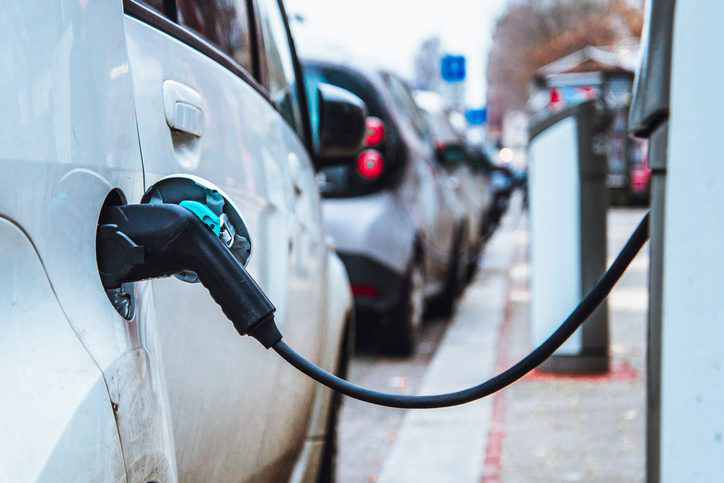

kv
|
27 november 2017
|
06u06
|
Bron: Goele de Cloet
Bij een test van Europese consumentenorganisaties blijken drie populaire elektrische wagens veertig procent minder rijbereik te hebben dan in de catalogus vermeld staat.
Range anxiety, of de angst niet genoeg rijbereik te hebben en stil te vallen is een van de grootste drempels om een elektrische wagen te kopen. Niemand heeft zin om langs de kant van de weg te staan met een lege batterij. Maar de laatste jaren is er flinke vooruitgang geboekt. Constructeurs kondigen steeds vaker wagens aan met een rijbereik van honderden kilometers. Zoals de nieuwe Opel Ampera-e, die zich profileert als een van de eerste betaalbare elektrische wagens, met een rijbereik van meer dan 500 kilometer.
Maar net zoals constructeurs wel heel rooskleurige uitstoot- en verbruikscijfers afficheren voor hun diesel- en benzinewagens, blijkt ook het rijbereik van elektrische wagens erg optimistisch ingeschat. Dat toont althans een test van het Zwitserse televisieprogramma ‘A bon entendeur’, in samenwerking met consumentenorganisatie UFC-Que Choisir, Test-Aankoop en haar Europese zusterorganisaties.
Voor het onderzoek werden drie meer betaalbare elektrische wagens getest: een Renault Zoe, een Nissan Leaf, en een Opel Ampera-e. Tesla’s zijn een pak duurder en werden niet in de test opgenomen. Voor de test reden de wagens rond tot er een lage batterijspanning gedetecteerd werd. Vervolgens werden ze opgeladen in een erkend testcentrum. Daarna gingen ze in konvooi de weg op. De test ging uit van een realistische situatie: naast de bestuurder zat in elke wagen nog een volwassen passagier en twee kinderen achterin. De verwarming werd op 22 graden gezet en het traject over 124 kilometer omvatte zowel stadsverkeer als snelwegen.
Onderweg werd van bestuurder en van plaats in het konvooi gewisseld, om de invloed van de rijstijl van de chauffeur en van de luchtweerstand te verminderen.
Na de rit keken de onderzoekers hoeveel energie nodig was om de batterijen weer op te laden.
Wat bleek: het werkelijke rijbereik lag minstens veertig procent lager dan de afstanden waarmee de constructeurs uitpakken. De Nissan Leaf haalde 144 in plaats van 250 kilometer, bij de Renault Zoe was dat 232 in plaats van 400 kilometer en voor de Opel Ampera-e 304 in plaats van 520 kilometer. Op snellere wegen kan het rijbereik zelfs de helft lager liggen dan aangegeven, in de best mogelijk omstandigheden blijft dat beperkt tot 20 procent.
De reden voor de grote verschillen is de testprocedure. Net als bij diesel- en benzinewagens worden elektrische wagens op de rolband getest, in ideale temperatuursomstandigheden en zonder passagiers.
Sven Mestdagh van Test-Aankoop:
“Dit zijn ‘uiteraard’ maar richtwaarden. Onder reële omstandigheden met lage temperaturen en hoge snelheden moet de autonomie naar beneden worden bijgesteld.”
‘We hebben de drie fabrikanten op de hoogte gesteld van deze resultaten en kregen vrijwel identieke reacties. Ze verstoppen zich allemaal achter de officiële NEDC-cyclus en bevestigen dat dit ‘uiteraard’ maar richtwaarden zijn’, laat Sven Mestdagh van Test-Aankoop weten. ‘Onder reële omstandigheden met lage temperaturen en hoge snelheden moet de autonomie naar beneden worden bijgesteld.’
De waarden maken het dus wel mogelijk om modellen onderling te vergelijken. Maar ze geven geen realistisch beeld van de afstand die je kunt afleggen met een volle batterij. Bovendien, merkt Test-Aankoop nog op, bleek er bij het laden ook energie verloren te gaan, vooral bij de Renault Zoe.
Mestdagh wijst er wel op dat zelfs met het bijgestelde rijbereik de geteste elektrische wagens nog altijd aan de noden van de doorsnee chauffeur voldoen. De consumentenorganisaties vragen vooral realistischere tests en meer openheid van de fabrikanten over het werkelijke rijbereik.
Leerlingen die thuis een andere taal spreken dan het Nederlands, mogen die ook gebruiken op de speelplaats en zelfs in de klas.
De Brusselse politie wist dat de aangekondigde betoging op het Poelaertplein zaterdagavond uit de hand kon lopen.

De koers van de digitale munt bitcoin gaat hard op de 10.000 dollar af. Zal dit wel blijven duren en wat kunnen de gevolgen zijn?